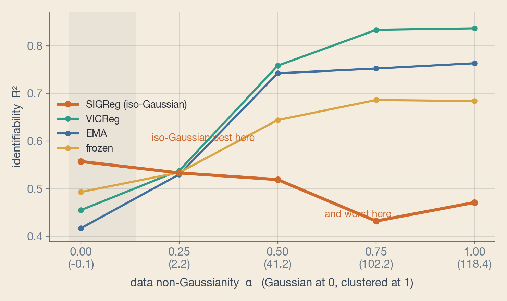
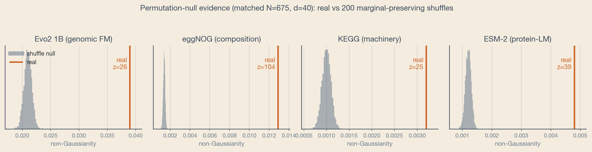
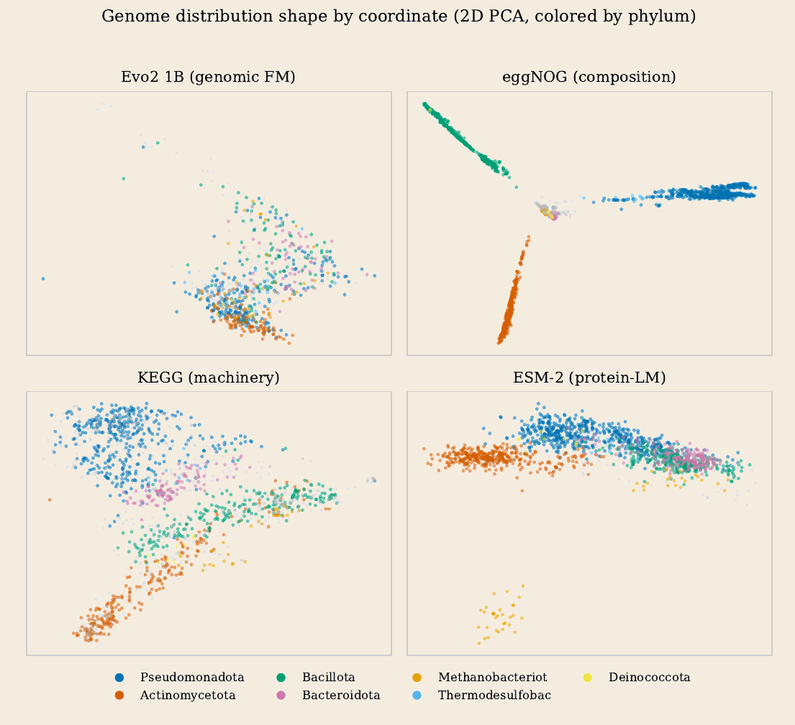
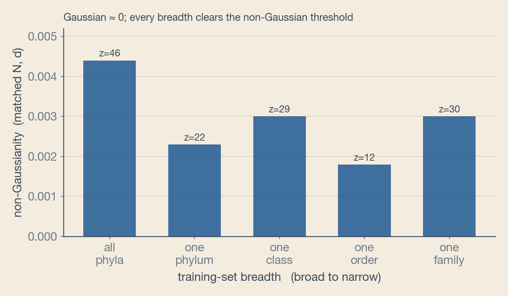
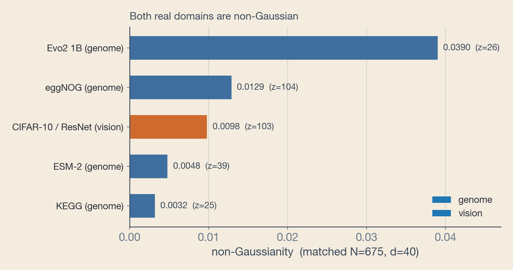
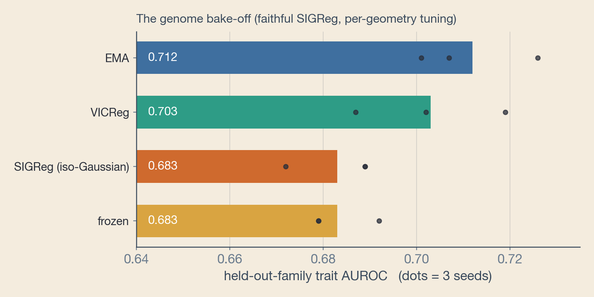

When Isotropy Fails: Selecting a JEPA’s Collapse-Avoidance Geometry from the Data Distribution
A JEPA prevents collapse with a geometry: an EMA target, a variance-covariance penalty, or a push toward an isotropic-Gaussian embedding. That choice is almost always fixed a priori, yet theory says the isotropic-Gaussian one is optimal only when the world’s latents are Gaussian. We measure that property from the data and let it choose the geometry. On real genomes, which read non-Gaussian at every scale, the shape-agnostic geometries win, exactly as the selector predicts.
Abstract
Joint-embedding predictive architectures (JEPAs) avoid representational collapse with a geometry: an exponential-moving-average (EMA) target, a variance-covariance penalty (VICReg), or a push toward an isotropic-Gaussian embedding (LeJEPA/SIGReg). That geometry is almost always fixed a priori and applied across domains. Recent theory undercuts the practice: pushing embeddings toward an isotropic Gaussian recovers the world’s latents iff those latents are themselves Gaussian, so no fixed shape is universally optimal. Yet the field only argues against a fixed geometry; nobody measures the deciding property and selects the geometry from it. We introduce a training-free selector (the embedding distribution’s sliced-negentropy non-Gaussianity, validated by a column-shuffle permutation null that certifies the signal reflects genuine joint structure) and use it to choose among {EMA, frozen, VICReg, isotropic-Gaussian}. In controlled synthetic data the rule sign-flips as predicted: the isotropic-Gaussian geometry is best when latents are Gaussian and worst when they are clustered, with the selector statistic tracking the crossover. On a real genome-JEPA, where genomes read non-Gaussian in every representation we test, the geometry bake-off ranks as the selector predicts (EMA 0.712, VICReg 0.703, SIGReg 0.684), under a faithful characteristic-function SIGReg with the loss weight tuned per geometry, so the ranking is not an artifact of a non-faithful or over-weighted regularizer. The gap is small and rests on three seeds, so we assert a ranking rather than a large effect, and we do not obtain a naturally-Gaussian real control. Selecting collapse-avoidance geometry from a measured statistic is a promising, testable principle, and we provide a cheap permutation-validated rule for it.
The geometry is chosen blind
Self-supervised world models learn by predicting in representation space rather than in pixel or token space, and their central technical hazard is representational collapse: the encoder mapping every input to a near-constant. Every method adopts some collapse-avoidance geometry to prevent it: an EMA / stop-gradient target, a variance-covariance penalty, or, most recently, an explicit push toward an isotropic-Gaussian embedding distribution. This geometry is almost always fixed once and applied across datasets and domains, as if one shape were universally right.
The property the theory says is decisive
Recent theory says that is a mistake. Klindt et al. prove that the isotropic-Gaussian objective (LeJEPA/SIGReg) yields a linearly identifiable representation iff the world’s latent variables are Gaussian, with the converse ruling out non-Gaussian alternatives. The guarantee is data-conditional, not universal: whether the objective recovers a faithful representation depends on the data-generating process, not the objective alone. A companion line argues that no single fixed covariance shape is optimal and instead adapts the target shape from the data, and an empirical study of vision encoders finds that global isotropy does not track capability. Taken together, fixing the embedding geometry a priori, and fixing it to a round Gaussian cloud in particular, is not obviously the right default.
Yet the field has stopped at arguing against a fixed geometry. Nobody has closed the loop: measure the data property the theory says is decisive, and use it to select the geometry. That is the gap we close.
A training-free selector, and a null that matters
The selector is a single statistic on a data-reflecting representation. Given an embedding batch, we symmetrically whiten its covariance, project onto many random unit directions, and average the sliced negentropy (a Hyvärinen entropy proxy). It is zero for any Gaussian of any covariance and positive for heavy-tailed or multimodal/clustered data; we use it in place of a kurtosis measure, which is blind to symmetric multimodality since clusters are platykurtic. The rule follows the theory: prefer a shape-agnostic geometry (VICReg or EMA) when the statistic is large, and the isotropic-Gaussian geometry only when it is near zero.
A raw statistic cannot distinguish genuine joint structure from a per-axis or encoder artifact, so the selector is only trustworthy with a null. For each coordinate we build one by column-shuffling: independently permuting each feature across samples, which preserves every marginal exactly but destroys joint structure. We recompute the statistic on 200 shuffles and report how many standard deviations the real value sits above that null; a coordinate is valid only if it beats its own shuffle null. This control is exactly what an earlier random-encoder selector lacked: a random convolutional encoder with mean-pooling Gaussianizes any input by the central limit theorem, so that selector read Gaussian for real genomes and random amino-acid sequences alike, uninformatively. For the same reason we read the statistic off external, data-reflecting representations rather than the JEPA’s own embeddings, whose geometry is partly set by the very objective being chosen.
Synthetic: the selection rule sign-flips
To validate the rule where ground truth is known, we dial the true latents from Gaussian to clustered, nonlinearly scramble them into observations, and train four tiny JEPAs that differ only in geometry (three seeds). The metric is linear identifiability: how well a ridge readout recovers the true latents. The result is a clean crossover: as the measured non-Gaussianity rises monotonically, the isotropic-Gaussian geometry moves from best (rank 1 of 4, R2 0.557 when the latents are Gaussian) to worst (rank 4 of 4, R2 0.471 when they are clustered), while VICReg, which decorrelates but does not force a shape, moves from middling to best (R2 0.836). Forcing embeddings toward a round Gaussian helps recovery when the latents really are Gaussian but actively destroys the cluster structure that carries the signal when they are not. No fixed geometry is best everywhere, and the winner is a deterministic function of a property we can measure from the data before training.

Genomes are non-Gaussian at every scale
We then run the validated selector on four data-reflecting representations of real genomes: a protein language model (ESM-2), machinery space (KEGG modules), functional composition (eggNOG orthologous groups), and a genomic foundation model (Evo2 1B). At matched sample size and dimension, all four are decisively non-Gaussian: each real value exceeds its own marginal-preserving shuffle null by 25 to 104 standard deviations. We deliberately do not rank the representations against one another: the null level itself differs across them, so raw statistics are not comparable. The robust claim is only that genome structure reads non-Gaussian in every representation we examine, including a state-of-the-art genomic foundation model.


The reading is scale-invariant. Narrowing taxonomic breadth from all phyla down to a single family never reaches the Gaussian level; stripping away phyla merely exposes genus-level clusters beneath, so the population stays non-Gaussian at every zoom level. A second real domain, CIFAR-10 images embedded in a pretrained ResNet-18 (the vision analog of the ESM-2 coordinate), also reads decisively non-Gaussian. Neither accessible real domain supplies the near-Gaussian regime, so the synthetic sweep remains the only place the Gaussian end of the sign-flip can be exercised.


The bake-off on real genomes
The selector places genomes firmly in the clustered regime, so its prescription is concrete: the shape-agnostic geometries should beat the isotropic-Gaussian one on the actual genome-JEPA. The model is a from-scratch, 0.63M-parameter convolutional gene encoder (no tokenizer, no pretrained expert) trained on roughly 675 bacterial genomes under an evolutionary-conditioning objective: predict an ortholog’s latent in another genome from a gene’s embedding and the pair’s divergence, under a smooth-L1 loss against a stop-gradient target. Four geometries share the encoder, predictor, objective, data, and hyperparameters, differing only in collapse avoidance: EMA, frozen, VICReg, and a faithful characteristic-function SIGReg that constrains all moments toward a standard normal rather than the first two.
Evaluated by held-out-family trait recovery (a logistic probe on the frozen genome embedding, scored on genomes whose family is unseen in training), the ranking matches the prediction: EMA (0.712) and VICReg (0.703) lead, and isotropic-Gaussian SIGReg (0.684) trails. Crucially, with the faithful implementation and the loss weight tuned per geometry, SIGReg is no longer below the frozen random-feature floor (0.684 vs 0.683). The direction the selector predicts therefore survives the two corrections that could most plausibly have confounded an earlier, weaker version of this experiment.

What it means, and what it does not
Four independent lines hold up. The selector, gated by a permutation null, separates genuine joint structure from per-axis and finite-sample artifacts, correcting the earlier random-encoder version that read Gaussian for everything. In synthetic data the rule sign-flips. Genomes read non-Gaussian in every representation and at every taxonomic scale we measure. And on the real genome-JEPA the shape-agnostic geometries beat isotropic-Gaussian, with SIGReg no longer trailing the random-feature floor. We still temper the claim: the genome gap is small (~0.02 to 0.03) and rests on three seeds, and we lack a naturally-Gaussian real dataset for the Gaussian end of the sign-flip.
There is also an honest gap between observation and latent. The selector is computed on data representations, not on the world’s latents, and non-Gaussian observations are compatible with Gaussian latents, so consistency across independent representations is evidence for, not proof of, non-Gaussian structure. Even so, selecting collapse-avoidance geometry from a measured, permutation-validated statistic is a cheap and testable principle, and on every real representation we examined it points the same way: away from forced isotropy.
joint-embedding predictive architecture · representational collapse · collapse-avoidance geometry · non-Gaussianity · LeJEPA / SIGReg · genome world models
Cite
@article{horiuchi2026isotropy,
title = {When Isotropy Fails: Selecting a JEPA's Collapse-Avoidance Geometry from the Data Distribution},
author = {Horiuchi, Miyu},
year = {2026},
note = {replicater.xyz/writing/jepa-geometry-selection}
}